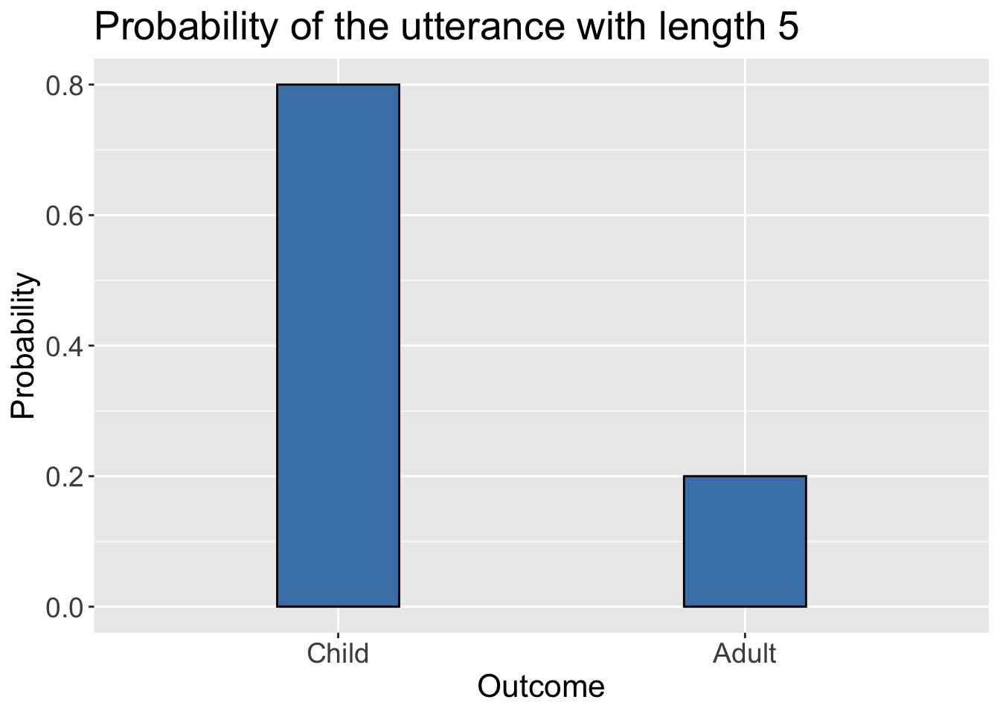
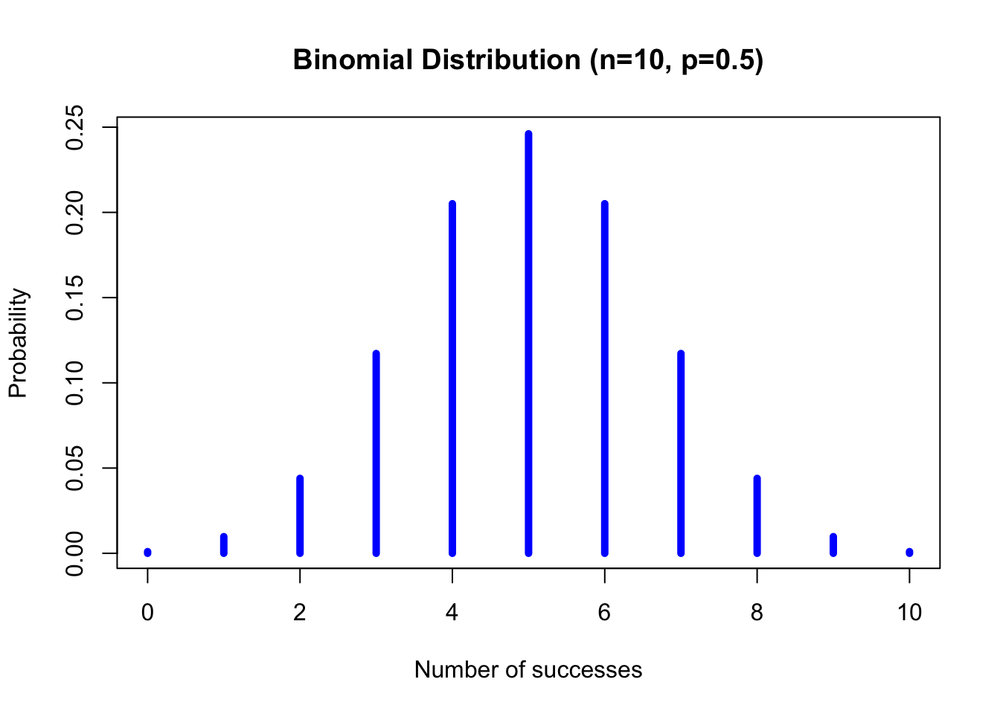
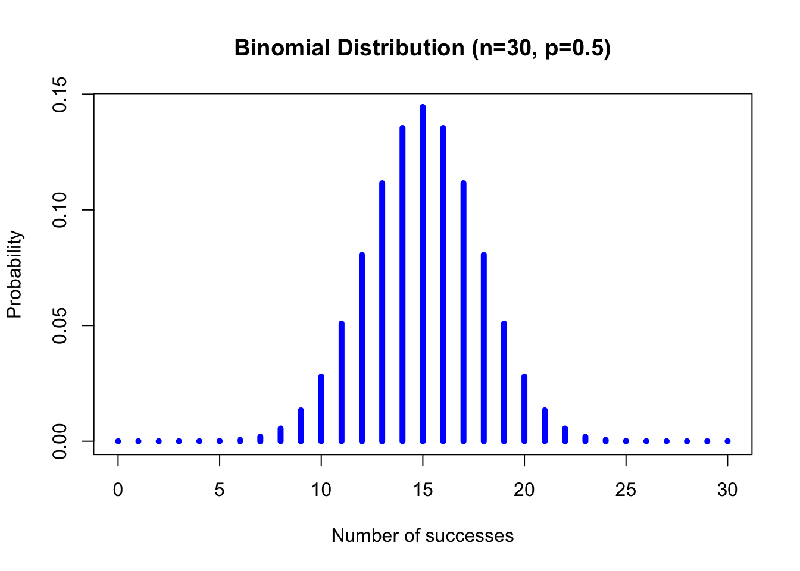
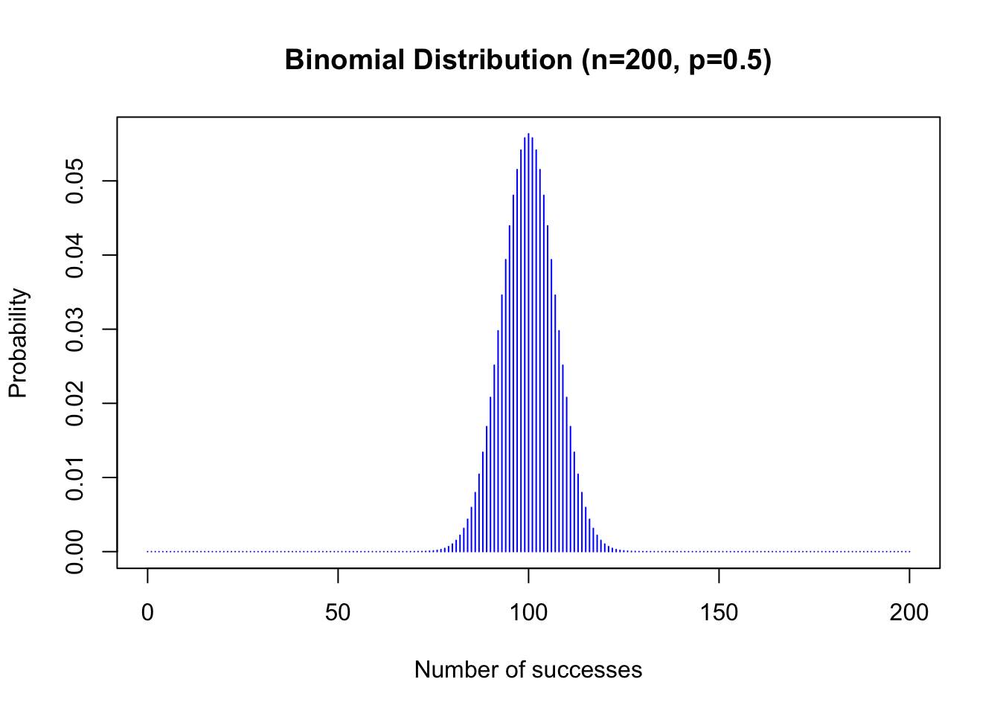
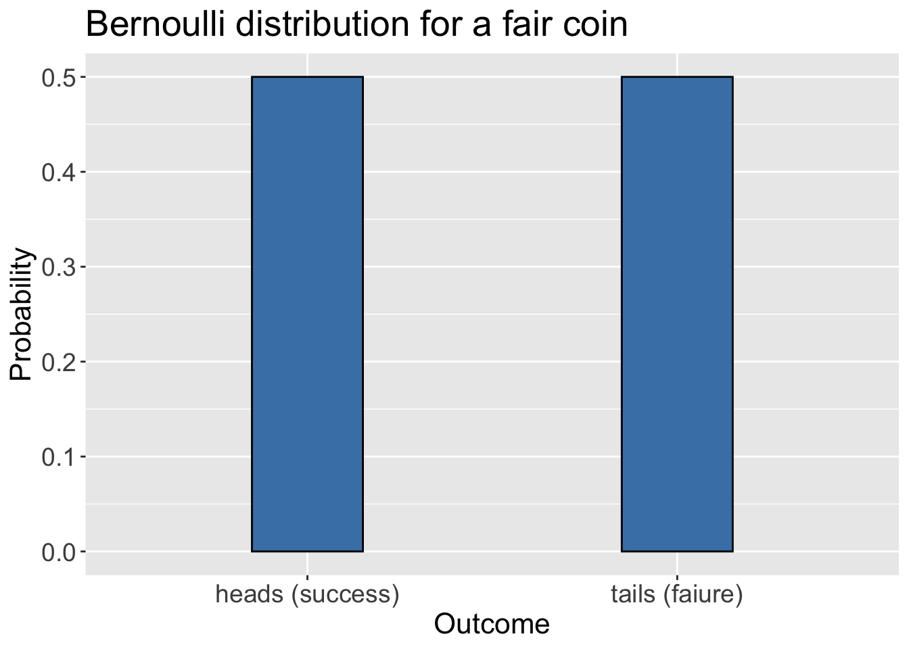
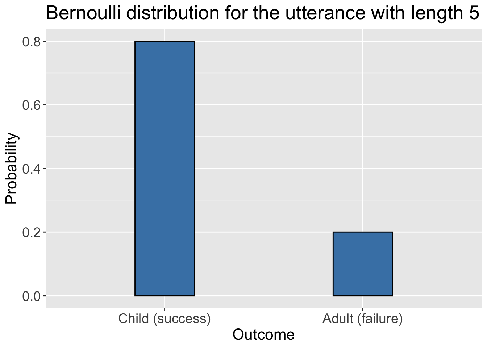
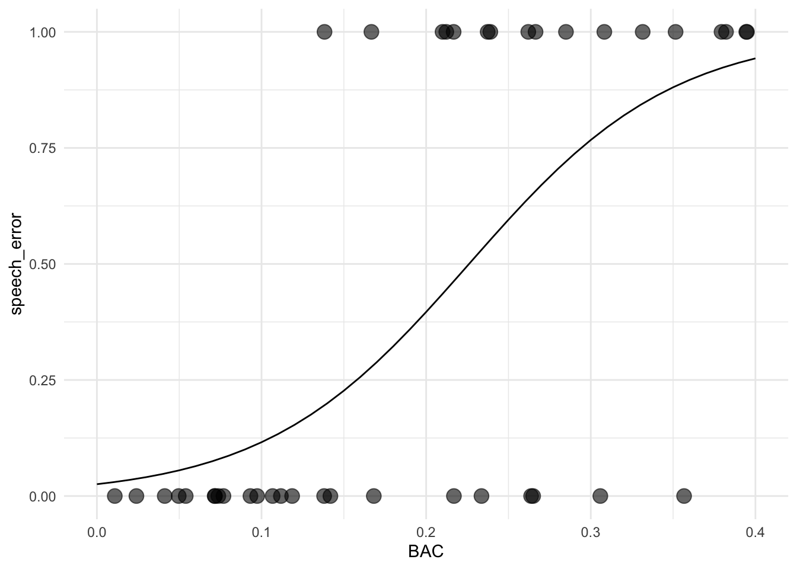

Chapter 12 Logistic Regression
So far, we built linear models where the outcome (i.e. dependent variable) was a continuous value (e.g. reaction time, frequency, etc.). Now, we turn to modeling data where the outcome is a categorial value. In particular, we will use logistic regression to model categorical outcomes where the number of categories is two. Some examples are:
- acceptable – unacceptable expression
- NP NP construction – NP PP construction
- SOV – SVO word order
- accusative present – accusative absent
- adult – child
For example, we can use average utterance length as an indicator of child speech vs. adult speech. Consider the following artificial toy dataset.
| Utterance length | Utterer |
|---|---|
| 2 | child |
| 8 | adult |
| 12 | adult |
| 3 | adult |
| 3 | child |
| 6 | adult |
| 5 | ??? |
Given the data set above, can we predict whether it was uttered by a child or an adult?
Notice that the answer is not that straightforward as it is possible that the utterance belongs to a child because it is shortish but on the other hand, we do see that the adults also produce short sentences (e.g. utterance length of 3).
12.1 The Intuition
The core intuition behind logistic regression is very simple. The task is to model the probability of an outcome given a predictor. Going back to our toy example above, we would like a model that can produce probabilities like the following.
- \(p(child | length = 5)\)
- read as probability of the utterer being a child given that the utterance length is 5
- read as probability of the utterer being a child given that the utterance length is 5
- \(p(adult | length = 5)\)
- read as probability of the utterer being an adult given that the utterance length is 5
For example, we want to build a model that returns something like the following.

Once we estimate the probabilities, we have a model that can:
- predict the categorical outcome (e.g. adult vs. child)
- help us interpret the relationship between a predictor and the outcome
Let us now turn to the math behind how the logistic regression works.
12.2 The Math
Remember that our linear regression models assumed that our data is normally distributed. Normal distribution is a distribution of continuous values. Similarly, for logistic regression, we assume that the outcome variables come from a certain probability distribution.
12.2.1 Binomial & Bernoulli Distributions
12.2.1.1 Binomial Distribution
The Binomial Distribution is a discrete probability distribution with a fixed number of Bernoulli trials with the parameters:
- \(n\) trials
- \(p\) probability
where each trial has only two possible outcomes: success or failure. Success can be associated with any outcome that is relevant to you as long as there are only two outomes. For example:
- success = child – failure = adult
- success = acceptable – failure = unacceptable
- success = SVO – failure = SOV
- …
A good way of understanding the binomial distribution is to think of a coin-flip experiment. Imagine that you have a fair coin and you flip the coin 10 times. What is the probability that you will have 5 heads (i.e. successes)?

To get the actual probability values in R, we can use the dbinom() function.
n = 10 #number of trials
p = 0.5 #probability of success (e.g. heads)
s = 5 #number of successes in n trails (e.g. number of heads in 10 trials)
dbinom(s,n,p)## [1] 0.2460938Try it with different parameters to see how the probabilites change.
Notice that the binomial distribution is a discrete distribution (not continuous) but the plot looks very similar to a normal distribution especially when the number of trials is at or above 30.


12.2.1.2 Bernoulli distribution
A Bernoulli distribution is a special case of a binomial distribution with where the number of trials is 1. The only relevant parameter is the \(p\). Thus, Bernoulli distribution for a fair coin would look like the following.

What if the coin were a bit unfair. Assume that you want to cheat but not too much to avoid getting caught.
Finally, going back to our toy example from above about the length of utterances. Notice that this is also a Bernoulli distribution.

Bernoulli distribution will vary based on a single parameter \(p\), which is the probability of success for a given condition.
12.3 Logistic Regression
Remember that in linear regression, the goal was to estimate the model parameters that can describe a line.
\[ \underbrace{Y}_{\text{dependent variable}} = \overbrace{\underbrace{a}_{\text{intercept}}}^{\text{additive term}} + \overbrace{\underbrace{b}_{\text{slope}} * \underbrace{X}_{\text{predictor}}}^{\text{additive term}} \]
In other words, our model took input some data, assumed that the variance in the data can be described by a line, then tried to estimate the parameters (i.e. intercept and slope). For example, we tried to estimate the taxi fare cost and our linear model could predict it as follows:
- cost = Intercept + Slope * Distance (in km)
- cost = 20 + 14 * 5
The values for the intercept and the slope were estimated by the model after analyzing the input data. The output of the model (i.e. the cost) is an arbitrary number (e.g. 90 TL).
In logistic regression, we don’t want an arbitrary number. Instead, we want a category (e.g. adult or child) along with a probability. In fact, what we need is a probability for success and the Bernoulli distribution will handle the rest.
- \(y \sim Bernoulli(p)\)
- read as \(y\) as a function of Bernoulli(p)
- \(y\) is the predicted category
So, we need a way to convert arbitrary numbers (output of the linear equation) to probabilities. Remember that probabilities range between [0,1].
In mathematics, there is a really nice function that will squeeze arbitrary numbers between [0,1]. The name of this function is the logistic function.
Figure 12.1: Logistic Function
In R, we can use the plogis() function to apply the logistic function to an arbitrary number. Try the following code with various values to see what you get.
## [1] 1## [1] 0.8909032## [1] 0.5## [1] 0.04742587This is nice because we can use the logistic function to convert the output of our linear function to probabilities. Once we have the probabilities, we can get a Bernoulli distribution to predict the category we are interested in.
By now, it should be clear where the name logistic regression comes from.
12.3.1 Log Odds & Logits
In a nutshell, the logistic regression model works as follows:
- \(p = logistic(output)\)
- \(y \sim Bernoulli(p)\)
You calculate some output:
- (\(output = Intercept + Slope * input\))
You convert it to a probability:
- \(p = logistic(output)\)
The rest is just a Bernoulli distribution with the parameter \(p\):
- \(y \sim Bernoulli(p)\)
There is an important difference though. In linear regression the output is just an arbitrary number :
- (\(output = Intercept + Slope * input\)).
In logistic regression, the model output is a logit. So, we calculate the probability of logits rather than arbitrary numbers.
- \(logit(p)= intercept + slope * x\)
12.3.1.1 Odds, Log Odds, and Logits
Yon understand logits, we need to understand the concept of odds. You must have heard questions like:
- What are the odds that our team will win this week?
- The odds are in my favor.
- The odds are 1 to 1.
The odds express the probability of an event occurring (p) over the probability of an event not occurring (1 − p).
- \(odds(X=win) = \frac{P(X=win)}{1-P(X=win)}\)
Logits are log odds (\(log(odd)\)). Converting the odds to log odds (i.e. logits) turns them into a continuous scale from negative infinity to positive infinity. Thus, it allows us to model categorical outcomes similar to continuous outcomes.
| Probability | Odds | log odds (logits) |
|---|---|---|
| 0.1 | 0.11 to 1 | –2.20 |
| 0.4 | 0.67 to 1 | –0.41 |
| 0.5 | 1 to 1 | 0.00 |
| 0.8 | 4 to 1 | +1.39 |
| 0.9 | 9 to 1 | +2.20 |
Logistic Regression models estimate coefficients (intercept and slope) as logits. We can turn logits into probabilities, simply by feeding them into the logistic function.
12.4 Logistic Regression in R
12.4.1 Data
Let us see logistic regression in action by using it on a dataset from Bodo Winter’s book. For this task, we will use the speech_errors dataset.
## Rows: 40 Columns: 2
## ── Column specification ────────────────────────────────────────────────────────
## Delimiter: ","
## dbl (2): BAC, speech_error
##
## ℹ Use `spec()` to retrieve the full column specification for this data.
## ℹ Specify the column types or set `show_col_types = FALSE` to quiet this message.## # A tibble: 40 × 2
## BAC speech_error
## <dbl> <dbl>
## 1 0.0737 0
## 2 0.0973 0
## 3 0.234 0
## 4 0.138 1
## 5 0.0933 0
## 6 0.262 1
## 7 0.357 0
## 8 0.237 1
## 9 0.352 1
## 10 0.379 1
## # ℹ 30 more rowsThe data consists of two columns:
BAC: A continuous value representing the level of Blood Alcohol Concentrationspeech_error: A binary value representing the presence and absence of a speech error.- 1 = speech error
- 0 = no speech error
12.4.2 Model
In R, we will use the glm() function, which stands for generalized linear model. glm() takes input
- an output variable,
- predictors
- a dataset
- a family parameter, which will be
'binomial'for our purposes
Simple as that, we have modeled the presence and absence of speech errors as a function of blood alcohol concentration using logistic regression. Let us inspect the model coefficients to understand what our model learnt from the data.
## # A tibble: 2 × 5
## term estimate std.error statistic p.value
## <chr> <dbl> <dbl> <dbl> <dbl>
## 1 (Intercept) -3.64 1.12 -3.24 0.00118
## 2 BAC 16.1 4.86 3.32 0.000903We learn a few things:
- The slope of BAC is positive (16.1). This means that an increase in BAC will lead to an increase in speech errors.
- We also see that the p < 0.05. This indicates that our conclusion is statistically significant.
- Remember that the output of logistic regression is a logit. Thus our coefficients (intercept and slope) are in logit units.
The results of the model can be reported as:
- There was a reliable effect of BAC (logit coefficient: +16.11, SE = 4.86, z=3.3, p = 0.0009).
12.4.3 From logits to probabilities
Logits are a bit confusing. Let us turn our logits to probabilities to get a more intuitive understanding of the model results.
First, let us convert the intecept to a probability. Remember that the intercept is the logit for BAC = 0.
intercept <- tidy(speech_error_model)$estimate[1]
slope <- tidy(speech_error_model)$estimate[2]
plogis(intercept)## [1] 0.02549508This shows that a sober person will make a speech error with the probability \(P=0.025\), quite a small probability.
Now let us check the probability of a person with a BAC of 0.4 making speech errors.
## [1] 0.7670986That is a huge jump. Our model predicts that someone with a \(BAC = 0.3\) will make a speech error with a probability \(P = 0.76\), a lot more likely.
Let’s see what the data looks like.
## # A tibble: 9 × 2
## BAC speech_error
## <dbl> <dbl>
## 1 0.357 0
## 2 0.352 1
## 3 0.379 1
## 4 0.306 0
## 5 0.382 1
## 6 0.308 1
## 7 0.394 1
## 8 0.332 1
## 9 0.395 1Not bad. Using logistic regression we can:
- understand the relationship between variables where the outcome is categorical (two categories)
- make predictions
Now that we have the model coefficients, we can predict some values and plot them.
BAC_vals <- seq(0, 0.4, 0.01)
y_preds <- plogis(intercept + slope * BAC_vals)
mdl_preds <- tibble(BAC_vals, y_preds)
mdl_preds## # A tibble: 41 × 2
## BAC_vals y_preds
## <dbl> <dbl>
## 1 0 0.0255
## 2 0.01 0.0298
## 3 0.02 0.0349
## 4 0.03 0.0407
## 5 0.04 0.0475
## 6 0.05 0.0553
## 7 0.06 0.0644
## 8 0.07 0.0748
## 9 0.08 0.0867
## 10 0.09 0.100
## # ℹ 31 more rowsggplot(data, aes(x = BAC, y = speech_error)) +
geom_point(size = 4, alpha = 0.6) +
geom_line(data = mdl_preds,
aes(x = BAC_vals, y = y_preds)) +
theme_minimal()
12.4.4 Dative Dataset
Let us now turn to another dataset we discussed earlier in the semester. This is the dative dataset by Bresnan et al. (2007). The main goal of the experiment was to identify the factors in determining the dative alternation in English:
- Alex gave Sam a book. (NP NP)
- Alex gave a book to Sam. (NP PP)
The dative data set can be found directly using the languageR library. Let us take a look at the columns in the dataset and also some values to get a sense of what it looks like.
## [1] "Speaker" "Modality" "Verb"
## [4] "SemanticClass" "LengthOfRecipient" "AnimacyOfRec"
## [7] "DefinOfRec" "PronomOfRec" "LengthOfTheme"
## [10] "AnimacyOfTheme" "DefinOfTheme" "PronomOfTheme"
## [13] "RealizationOfRecipient" "AccessOfRec" "AccessOfTheme"## Speaker Modality Verb SemanticClass LengthOfRecipient AnimacyOfRec DefinOfRec
## 1 <NA> written feed t 1 animate definite
## 2 <NA> written give a 2 animate definite
## 3 <NA> written give a 1 animate definite
## PronomOfRec LengthOfTheme AnimacyOfTheme DefinOfTheme PronomOfTheme
## 1 pronominal 14 inanimate indefinite nonpronominal
## 2 nonpronominal 3 inanimate indefinite nonpronominal
## 3 nonpronominal 13 inanimate definite nonpronominal
## RealizationOfRecipient AccessOfRec AccessOfTheme
## 1 NP given new
## 2 NP given new
## 3 NP given newNext, let us take a look at the possible values for the RealizationOfRecipient column to see what they look like.
## [1] "NP" "PP"## [1] "animate" "inanimate"OK so, we have only two values. This is a good task for logistic regression. Let us for now model the RealizationOfRecipient as a function of the AnimacyOfRec.
model_1 <- model <- glm(RealizationOfRecipient ~ AnimacyOfRec, dative, family='binomial')
tidy(model)## # A tibble: 2 × 5
## term estimate std.error statistic p.value
## <chr> <dbl> <dbl> <dbl> <dbl>
## 1 (Intercept) -1.15 0.0426 -27.1 1.15e-161
## 2 AnimacyOfRecinanimate 1.23 0.136 9.02 1.87e- 19model_2 <-glm(RealizationOfRecipient ~ AnimacyOfRec+LengthOfTheme+LengthOfRecipient+AnimacyOfTheme, dative, family='binomial')
tidy(model)## # A tibble: 2 × 5
## term estimate std.error statistic p.value
## <chr> <dbl> <dbl> <dbl> <dbl>
## 1 (Intercept) -1.15 0.0426 -27.1 1.15e-161
## 2 AnimacyOfRecinanimate 1.23 0.136 9.02 1.87e- 19Now let us compare the two models.
## Loading required package: zoo##
## Attaching package: 'zoo'## The following objects are masked from 'package:base':
##
## as.Date, as.Date.numeric## Likelihood ratio test
##
## Model 1: RealizationOfRecipient ~ AnimacyOfRec
## Model 2: RealizationOfRecipient ~ AnimacyOfRec + LengthOfTheme + LengthOfRecipient +
## AnimacyOfTheme
## #Df LogLik Df Chisq Pr(>Chisq)
## 1 2 -1831.1
## 2 5 -1379.5 3 903.19 < 2.2e-16 ***
## ---
## Signif. codes: 0 '***' 0.001 '**' 0.01 '*' 0.05 '.' 0.1 ' ' 112.5 Testing the model
test_data <- select(dative, AnimacyOfRec,LengthOfTheme,LengthOfRecipient,AnimacyOfTheme,RealizationOfRecipient)
head(test_data)## AnimacyOfRec LengthOfTheme LengthOfRecipient AnimacyOfTheme
## 1 animate 14 1 inanimate
## 2 animate 3 2 inanimate
## 3 animate 13 1 inanimate
## 4 animate 5 1 inanimate
## 5 animate 3 2 inanimate
## 6 animate 4 2 inanimate
## RealizationOfRecipient
## 1 NP
## 2 NP
## 3 NP
## 4 NP
## 5 NP
## 6 NP# Make predictions on the test set
predictions <- predict(model, newdata = test_data, type = "response")
# For binary classification, calculate accuracy
predicted_classes <- ifelse(predictions > 0.5, 'PP', 'NP')
accuracy <- mean(predicted_classes == test_data$RealizationOfRecipient)
accuracy## [1] 0.7425682